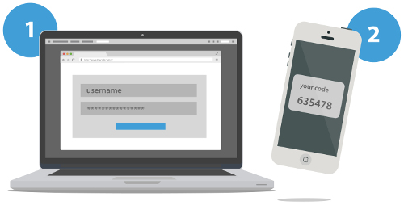

Divfaktoru autentifikācija
Definīcija
Divfaktoru autentifikācija (2FA) ir drošības mehānisms, kas lietotājiem pirms piekļuves kontam vai sistēmai pieprasa nodrošināt divus dažādus verifikācijas veidus.
Parasti šie faktori ietver kaut ko tādu, ko lietotājs zina (paroli), un kaut ko tādu, kas lietotājam ir (viedtālrunī ģenerēts vienreizējs kods), kas pievieno papildu aizsardzības slāni pret nesankcionētu piekļuvi.
2FA veidi ietver uz īsziņām balstītus kodus, autentifikācijas lietotnes, aparatūras žetonus (YubiKey), biometriju (piemēram, pirkstu nospiedumu vai sejas atpazīšanu) un uz e-pastu balstītus kodus. (Binance Academy)
Divfaktoru autentifikācijas metodes
Aparatūras marķieri — Uzņēmumi saviem darbiniekiem var piešķirt aparatūras marķierus atslēgas veidā, kas ģenerē kodus ik pēc dažām sekundēm līdz minūtei. Šī ir viena no vecākajām divfaktoru autentifikācijas formām.
Pārbaude ar īsziņu — Īsziņas var izmantot kā divfaktoru autentifikācijas formu, kad ziņojums tiek nosūtīts uz uzticamu tālruņa numuru. Lietotājam tiek piedāvāts mijiedarboties ar tekstu vai izmantot vienreizēju kodu, lai verificētu savu identitāti vietnē vai programmā.
Pašpiegādes paziņojumi — Pašpiegādes divfaktoru autentifikācijas metodēm nav nepieciešama parole. Šāda veida divfaktoru autentifikācija nosūta signālu uz jūsu tālruni, lai apstiprinātu/noraidītu vai akceptētu/noraidītu piekļuvi tīmekļa vietnei vai programmai un verificētu jūsu identitāti.
Balss autentifikācija — Balss autentifikācija darbojas līdzīgi pašpiegādes paziņojumiem, izņemot to, ka jūsu identitāte tiek apstiprināta, izmantojot automatizāciju. Balss lūgs nospiest taustiņu vai nosaukt savu vārdu, lai jūs identificētu. (Microsoft)
Faktoru veidi
Divu faktoru autentifikācijā tiek izmantoti trīs galvenie faktoru veidi: zināšanu faktori, valdījuma faktori un raksturīgie faktori. Zināšanu faktori pieprasa lietotājam kaut ko zināt, piemēram, paroli vai PIN. Īpašuma faktori nozīmē, ka lietotāja īpašumā ir kaut kas fizisks, piemēram, viedkarte, USB marķieris vai mobilā ierīce. Raksturīgie faktori ir balstīti uz lietotāja unikāliem biometriskajiem raksturlielumiem, piemēram, pirkstu nospiedumiem, balss atpazīšanu vai sejas atpazīšanu.
Divu faktoru autentifikācija ir svarīgs drošības pasākums, kas uzlabo datorsistēmu aizsardzību, pieprasot lietotājiem nodrošināt divus dažādus identifikācijas veidus. Tas papildus parolēm pievieno papildu drošības līmeni, mazinot riskus, kas saistīti ar nozagtiem vai uzlauztiem akreditācijas datiem. Izmantojot vairākus faktorus, piemēram, zināšanas, īpašumtiesības vai raksturīgās īpašības, divu faktoru autentifikācija ievērojami samazina nesankcionētas piekļuves iespējamību un pastiprina vispārējo drošību. (Eiropas Informācijas tehnoloģiju sertifikācijas institūts)

Lietotnes ar divfaktoru autentifikāciju
Divfaktoru autentifikācija (2FA) šodien tiek izmantota ļoti plaši — gandrīz visās populārākajās lietotnēs un tīklos, kur ir svarīga drošība. Daži populāri piemēri:
E-pasts un mākoņpakalpojumi:
- Google (Gmail, Google Drive)
- Microsoft (Outlook, OneDrive, Office 365)
- Apple ID (iCloud, App Store)
Sociālie tīkli:
- X (Twitter)
- TikTok
Saziņas lietotnes:
- Telegram
- Discord
Bankas un finanšu pakalpojumi:
- Internetbankas (Swedbank, SEB u.c.)
- PayPal
- Revolut, Wise
- Kriptovalūtu biržas (piem., Binance, Coinbase)
Darba un projektu platformas:
- Slack
- Zoom
Šis tikai parāda, cik drošs un uzticams ir 2FA autentifikācijas veids. (Ābols)
Problēmas
Lai gan divfaktoru autentifikācijas pakalpojums piedāvā daudzas priekšrocības, ir arī potenciālas problēmas. Ja jūs pazaudējat piekļuvi savai autentifikācijas metodei (piemēram, telefonam), tas var sarežģīt piekļuvi jūsu kontam. Turklāt daži cilvēki var uzskatīt šo procesu par neērtu. (Delfi)
Atsauces
- Ābols, Artis. Knapi 10% Google lietotāju izmanto divfaktoru autentifikāciju. 2018-01-23. kursors.lv
- Binance Academy. What Is Two-Factor Authentication (2FA)? 2023-09-18. academy.binance.com
- Delfi. Solis uz drošību: Viss par divfaktoru autentifikāciju (2FA). 2023-11-06. delfi.lv
- Eiropas Informācijas tehnoloģiju sertifikācijas institūts. Kas ir divu faktoru autentifikācija un kā tā uzlabo drošību? 2023-08-04. lv.eitca.org
- Microsoft. Kas ir divfaktoru autentifikācija? microsoft.com